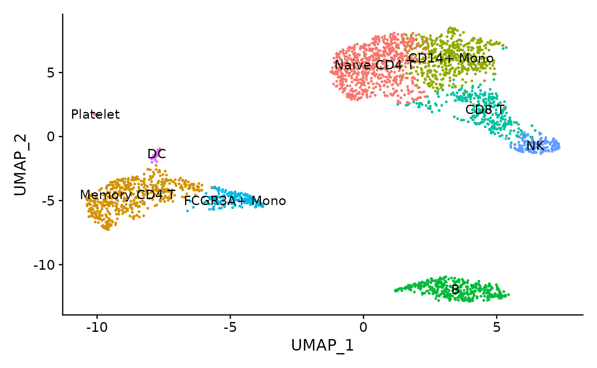
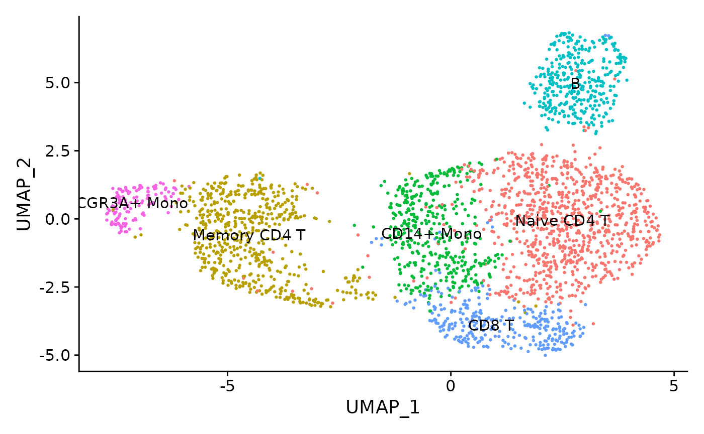
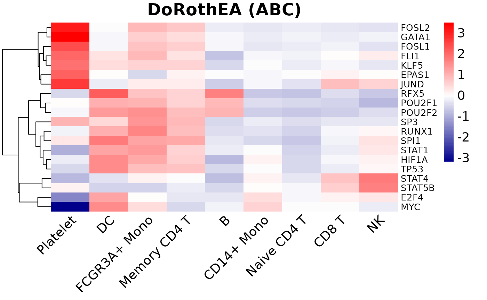

vignettes/single_cell_vignette.Rmd
single_cell_vignette.RmdAbstract
This vignette describes how to infer transcription factor activity from scRNA-seq data by running Viper on DoRothEA’s curated regulons.
DoRothEA is a comprehensive resource containing a curated collection of transcription factors (TFs) and its transcriptional targets. The set of genes regulated by a specific transcription factor is known as regulon. DoRothEA’s regulons were gathered from different types of evidence. Each TF-target interaction is defined by a confidence level based on the number of supporting evidence. The confidence levels ranges from A (highest confidence) to E (lowest confidence) (Garcia-Alonso et al. 2019).
DoRothEA regulons are usually coupled with the statistical method VIPER (Alvarez et al. 2016). In this context, TF activities are computed based on the mRNA expression levels of its targets. We therefore can consider TF activity as a proxy of a given transcriptional state (Dugourd and Saez-Rodriguez 2019).
Holland et al. (2020) evaluated the performance of DoRothEA in combination with VIPER when applied to scRNA-seq data. We showed that, in spite of the current limitations of scRNA-seq technologies, their approach can provide meaningful results in this context. Indeed, this vignette shows an example on how to apply DoRothEA regulons coupled with VIPER in a well known single-cell dataset.
First of all, you need a current version of R (http://www.r-project.org). DoRothEA is a freely available annotation package deposited on http://bioconductor.org/ and https://github.com/saezlab/dorothea.
You can install it by running the following commands on an R console:
if (!requireNamespace("BiocManager", quietly = TRUE))
install.packages("BiocManager")
BiocManager::install("dorothea")We also load here the packages required to run this script.
In the following paragraphs, we provide examples describing how to run VIPER on DoRothEA regulons in a scRNA-seq dataset. In particular, we use the Seurat toolkit for single cell genomics (Stuart et al. 2019). For the sake of simplicity, we follow the example provided in the following Seurat vignette:
https://satijalab.org/seurat/v3.1/pbmc3k_tutorial.html
The dataset contains 2700 Peripheral Blood Mononuclear Cells (PBMC) that were sequenced on the Illumina NextSeq 500. This dataset is freely available in 10X Genomics:
https://cf.10xgenomics.com/samples/cell/pbmc3k/pbmc3k_filtered_gene_bc_matrices.tar.gz
## Load the PBMC dataset
pbmc.data <- Read10X(data.dir = "filtered_gene_bc_matrices/hg19/")
## Initialize the Seurat object with the raw (non-normalized data).
pbmc <- CreateSeuratObject(counts = pbmc.data, project = "pbmc3k",
min.cells = 3, min.features = 200)We follow the standard pre-processing steps as described in the aforementioned Seurat vignette before going deeper into the data analysis. These steps carry out the selection and filtration of cells based on quality control metrics, the data normalization and scaling, and the detection of highly variable features (see https://satijalab.org/seurat/v3.1/pbmc3k_tutorial.html).
## Identification of mithocondrial genes
pbmc[["percent.mt"]] <- PercentageFeatureSet(pbmc, pattern = "^MT-")
## Filtering cells following standard QC criteria.
pbmc <- subset(pbmc, subset = nFeature_RNA > 200 & nFeature_RNA < 2500 &
percent.mt < 5)
## Normalizing the data
pbmc <- NormalizeData(pbmc, normalization.method = "LogNormalize",
scale.factor = 10000)
pbmc <- NormalizeData(pbmc)
## Identify the 2000 most highly variable genes
pbmc <- FindVariableFeatures(pbmc, selection.method = "vst", nfeatures = 2000)
## In addition we scale the data
all.genes <- rownames(pbmc)
pbmc <- ScaleData(pbmc, features = all.genes)One of the most relevant steps in scRNA-seq data analysis is clustering. Cells are grouped based on the similarity of their transcriptomic profiles. We first apply the Seurat v3 classical approach as described in their aforementioned vignette. We visualize the cell clusters using UMAP:
pbmc <- RunPCA(pbmc, features = VariableFeatures(object = pbmc),
verbose = FALSE)
pbmc <- FindNeighbors(pbmc, dims = 1:10, verbose = FALSE)
pbmc <- FindClusters(pbmc, resolution = 0.5, verbose = FALSE)
pbmc <- RunUMAP(pbmc, dims = 1:10, umap.method = "uwot", metric = "cosine")
pbmc.markers <- FindAllMarkers(pbmc, only.pos = TRUE, min.pct = 0.25,
logfc.threshold = 0.25, verbose = FALSE)
## Assigning cell type identity to clusters
new.cluster.ids <- c("Naive CD4 T", "Memory CD4 T", "CD14+ Mono", "B", "CD8 T",
"FCGR3A+ Mono", "NK", "DC", "Platelet")
names(new.cluster.ids) <- levels(pbmc)
pbmc <- RenameIdents(pbmc, new.cluster.ids)
Holland et al. (2020) showed that clustering the cells based on their TF activity profiles can also be very interesting. Indeed, clustering cells using TF activity computed with VIPER and DoRothEA performs better than using the expression level of the same TFs. In addition, it brings complementary information to the clusters based on transcriptomics profiles.
Here, we first run VIPER on DoRothEA’s regulons to obtain TFs activity, by using the wrapper function run_viper(). This function can deal with different input types such as matrix, dataframe, ExpressionSet or even Seurat objects. In case of a seurat object the function returns the same seurat object with an additonal assay called dorothea containing the TF activities in the slot data.
## We read Dorothea Regulons for Human:
dorothea_regulon_human <- get(data("dorothea_hs", package = "dorothea"))
## We obtain the regulons based on interactions with confidence level A, B and C
regulon <- dorothea_regulon_human %>%
dplyr::filter(confidence %in% c("A","B","C"))
## We compute Viper Scores
pbmc <- run_viper(pbmc, regulon,
options = list(method = "scale", minsize = 4,
eset.filter = FALSE, cores = 1,
verbose = FALSE))We then apply Seurat to cluster the cells following the same protocol than above but using TF activity scores.
## We compute the Nearest Neighbours to perform cluster
DefaultAssay(object = pbmc) <- "dorothea"
pbmc <- ScaleData(pbmc)
pbmc <- RunPCA(pbmc, features = rownames(pbmc), verbose = FALSE)
pbmc <- FindNeighbors(pbmc, dims = 1:10, verbose = FALSE)
pbmc <- FindClusters(pbmc, resolution = 0.5, verbose = FALSE)
pbmc <- RunUMAP(pbmc, dims = 1:10, umap.method = "uwot", metric = "cosine")
pbmc.markers <- FindAllMarkers(pbmc, only.pos = TRUE, min.pct = 0.25,
logfc.threshold = 0.25, verbose = FALSE)
## Assigning cell type identity to clusters
new.cluster.ids <- c("Naive CD4 T", "Memory CD4 T", "CD14+ Mono", "B", "CD8 T",
"FCGR3A+ Mono", "NK", "DC", "Platelet")
names(new.cluster.ids) <- levels(pbmc)
pbmc <- RenameIdents(pbmc, new.cluster.ids)
Finally, we characterise the different cell populations based on their TF activities thanks to the previously computed VIPER scores on DoRothEA’s regulons.
## We transform Viper scores, scaled by seurat, into a data frame to better
## handling the results
viper_scores_df <- GetAssayData(pbmc, slot = "scale.data",
assay = "dorothea") %>%
data.frame(check.names = F) %>%
t()
## We create a data frame containing the cells and their clusters
CellsClusters <- data.frame(cell = names(Idents(pbmc)),
cell_type = as.character(Idents(pbmc)),
check.names = F)
## We create a data frame with the Viper score per cell and its clusters
viper_scores_clusters <- viper_scores_df %>%
data.frame() %>%
rownames_to_column("cell") %>%
gather(tf, activity, -cell) %>%
inner_join(CellsClusters)
## We summarize the Viper scores by cellpopulation
summarized_viper_scores <- viper_scores_clusters %>%
group_by(tf, cell_type) %>%
summarise(avg = mean(activity),
std = sd(activity))For visualization purposes, we select the 20 most variable TFs across clusters according to our scores.
## We select the 20 most variable TFs. (20*9 populations = 180)
highly_variable_tfs <- summarized_viper_scores %>%
group_by(tf) %>%
mutate(var = var(avg)) %>%
ungroup() %>%
top_n(180, var) %>%
distinct(tf)
## We prepare the data for the plot
summarized_viper_scores_df <- summarized_viper_scores %>%
semi_join(highly_variable_tfs, by = "tf") %>%
dplyr::select(-std) %>%
spread(tf, avg) %>%
data.frame(row.names = 1, check.names = FALSE)
palette_length = 100
my_color = colorRampPalette(c("Darkblue", "white","red"))(palette_length)
my_breaks <- c(seq(min(summarized_viper_scores_df), 0,
length.out=ceiling(palette_length/2) + 1),
seq(max(summarized_viper_scores_df)/palette_length,
max(summarized_viper_scores_df),
length.out=floor(palette_length/2)))
viper_hmap <- pheatmap(t(summarized_viper_scores_df),fontsize=14,
fontsize_row = 10,
color=my_color, breaks = my_breaks,
main = "DoRothEA (ABC)", angle_col = 45,
treeheight_col = 0, border_color = NA) 
## R version 4.1.1 (2021-08-10)
## Platform: x86_64-pc-linux-gnu (64-bit)
## Running under: Ubuntu 20.04.3 LTS
##
## Matrix products: default
## BLAS/LAPACK: /usr/lib/x86_64-linux-gnu/openblas-pthread/libopenblasp-r0.3.8.so
##
## locale:
## [1] LC_CTYPE=en_US.UTF-8 LC_NUMERIC=C
## [3] LC_TIME=en_US.UTF-8 LC_COLLATE=en_US.UTF-8
## [5] LC_MONETARY=en_US.UTF-8 LC_MESSAGES=C
## [7] LC_PAPER=en_US.UTF-8 LC_NAME=C
## [9] LC_ADDRESS=C LC_TELEPHONE=C
## [11] LC_MEASUREMENT=en_US.UTF-8 LC_IDENTIFICATION=C
##
## attached base packages:
## [1] parallel stats graphics grDevices utils datasets methods
## [8] base
##
## other attached packages:
## [1] viper_1.26.0 Biobase_2.52.0 BiocGenerics_0.38.0
## [4] tidyr_1.1.4 pheatmap_1.0.12 tibble_3.1.5
## [7] SeuratObject_4.0.2 Seurat_4.0.4 dplyr_1.0.7
## [10] dorothea_1.5.2 BiocStyle_2.20.2
##
## loaded via a namespace (and not attached):
## [1] systemfonts_1.0.2 plyr_1.8.6 igraph_1.2.6
## [4] lazyeval_0.2.2 splines_4.1.1 listenv_0.8.0
## [7] scattermore_0.7 ggplot2_3.3.5 digest_0.6.28
## [10] htmltools_0.5.2 fansi_0.5.0 magrittr_2.0.1
## [13] memoise_2.0.0 tensor_1.5 cluster_2.1.2
## [16] mixtools_1.2.0 ROCR_1.0-11 globals_0.14.0
## [19] matrixStats_0.61.0 pkgdown_1.6.1 spatstat.sparse_2.0-0
## [22] colorspace_2.0-2 ggrepel_0.9.1 textshaping_0.3.5
## [25] xfun_0.26 crayon_1.4.1 jsonlite_1.7.2
## [28] spatstat.data_2.1-0 survival_3.2-13 zoo_1.8-9
## [31] glue_1.4.2 polyclip_1.10-0 gtable_0.3.0
## [34] leiden_0.3.9 kernlab_0.9-29 future.apply_1.8.1
## [37] abind_1.4-5 scales_1.1.1 miniUI_0.1.1.1
## [40] Rcpp_1.0.7 viridisLite_0.4.0 xtable_1.8-4
## [43] reticulate_1.22 spatstat.core_2.3-0 proxy_0.4-26
## [46] htmlwidgets_1.5.4 httr_1.4.2 RColorBrewer_1.1-2
## [49] ellipsis_0.3.2 ica_1.0-2 pkgconfig_2.0.3
## [52] farver_2.1.0 sass_0.4.0 uwot_0.1.10
## [55] deldir_1.0-5 utf8_1.2.2 tidyselect_1.1.1
## [58] labeling_0.4.2 rlang_0.4.11 reshape2_1.4.4
## [61] later_1.3.0 munsell_0.5.0 tools_4.1.1
## [64] cachem_1.0.6 generics_0.1.0 ggridges_0.5.3
## [67] evaluate_0.14 stringr_1.4.0 fastmap_1.1.0
## [70] yaml_2.2.1 ragg_1.1.3 goftest_1.2-3
## [73] knitr_1.36 fs_1.5.0 fitdistrplus_1.1-6
## [76] bcellViper_1.28.0 purrr_0.3.4 RANN_2.6.1
## [79] pbapply_1.5-0 future_1.22.1 nlme_3.1-153
## [82] mime_0.12 compiler_4.1.1 plotly_4.10.0
## [85] png_0.1-7 e1071_1.7-9 spatstat.utils_2.2-0
## [88] bslib_0.3.1 stringi_1.7.5 highr_0.9
## [91] desc_1.4.0 RSpectra_0.16-0 lattice_0.20-45
## [94] Matrix_1.3-4 vctrs_0.3.8 pillar_1.6.3
## [97] lifecycle_1.0.1 BiocManager_1.30.16 spatstat.geom_2.3-0
## [100] lmtest_0.9-38 jquerylib_0.1.4 RcppAnnoy_0.0.19
## [103] data.table_1.14.2 cowplot_1.1.1 irlba_2.3.3
## [106] httpuv_1.6.3 patchwork_1.1.1 R6_2.5.1
## [109] bookdown_0.24 promises_1.2.0.1 KernSmooth_2.23-20
## [112] gridExtra_2.3 parallelly_1.28.1 codetools_0.2-18
## [115] MASS_7.3-54 rprojroot_2.0.2 sctransform_0.3.2
## [118] mgcv_1.8-38 grid_4.1.1 rpart_4.1-15
## [121] class_7.3-19 rmarkdown_2.11 segmented_1.3-4
## [124] Rtsne_0.15 shiny_1.7.1